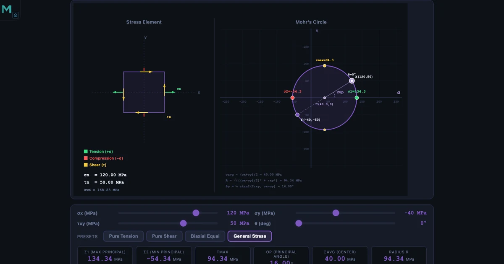
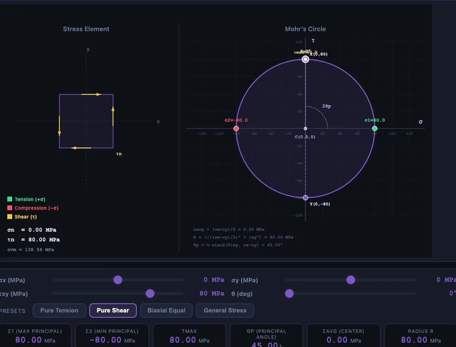

Mohr’s Circle Explained — A Visual Guide to Principal Stress

- Mohr’s Circle is a graphical method that plots a stress state in σ–τ space so the principal stresses, maximum shear, and principal-plane angle can be read off the circle instead of computed from the transformation equations.
- The circle centre is at σavg = (σx + σy)/2 and its radius is R = √[((σx − σy)/2)² + τxy²], which also equals the maximum in-plane shear τmax.
- Principal stresses are σ1 = σavg + R and σ2 = σavg − R; angles on the circle are twice the physical rotation, so a 2θ sweep on the circle corresponds to θ on the element.
Ask a class learning stress analysis to calculate σ1 and σ2 from the stress-transformation equations and most will eventually get there. Ask the same class to locate the principal plane on the part they’re analysing and the room goes quiet. The formulas are manageable; the geometry is not. Mohr’s Circle closes that gap by turning the trigonometric transformation into a drawing that students can read directly.
A Mohr’s Circle simulator takes it one step further. Slide σx and watch the circle shift. Change τxy and watch the radius grow. The principal stresses, the maximum shear, and the principal angle all update in real time — and the stress element on the left of the screen rotates to match. In five minutes a student develops an intuition that an hour of algebra will not produce.
The Problem Mohr’s Circle Actually Solves
At any point in a loaded body, the stress state in 2D is described by three numbers: the normal stress on the x-face (σx), the normal stress on the y-face (σy), and the shear stress on either face (τxy). But these values depend on the orientation of the element you chose to describe them on. Rotate the element and the numbers change — the underlying stress state does not, but the three numbers describing it do.
Somewhere between 0° and 90°, there is an orientation where the shear stress becomes zero. On those planes, the normal stresses reach their maximum and minimum values: σ1 (maximum) and σ2 (minimum), the principal stresses. On planes rotated 45° from these, the shear stress reaches its maximum magnitude, τmax. Those four numbers — σ1, σ2, τmax, and the principal angle θp — are what structural and mechanical engineers actually care about, because they govern yielding, fracture, and fatigue.
The stress-transformation equations give these numbers as trigonometric functions of 2θ:
\[\sigma_n(\theta) = \dfrac{\sigma_x + \sigma_y}{2} + \dfrac{\sigma_x - \sigma_y}{2}\cos 2\theta + \tau_{xy}\sin 2\theta\]
\[\tau_n(\theta) = -\dfrac{\sigma_x - \sigma_y}{2}\sin 2\theta + \tau_{xy}\cos 2\theta\]
These are correct. They are also the reason students panic in exams. Mohr’s Circle — proposed by German engineer Otto Mohr in 1882 — replaces this algebra with a single drawing, where reading off the same answers is a matter of identifying two points on a circle.
How the Circle Is Built — Centre, Radius, Two Points
Mohr’s Circle lives in a plane where the horizontal axis is normal stress (σ) and the vertical axis is shear stress (τ). Building the circle from any stress state (σx, σy, τxy) follows a three-step recipe.
Step 1 — Find the centre. The centre C sits on the σ-axis at the average of the two normal stresses:
\[\sigma_{\text{avg}} = \dfrac{\sigma_x + \sigma_y}{2}\]
In the hero image the readouts show σavg = (120 + (−40)) / 2 = 40.00 MPa — visible as C(40, 0) on the plot.
Step 2 — Find the radius. The radius R depends on how different σx and σy are and on the shear magnitude:
\[R = \sqrt{\left(\dfrac{\sigma_x - \sigma_y}{2}\right)^{\!2} + \tau_{xy}^2}\]
For the general-stress example: R = √[((120 − (−40))/2)² + 50²] = √[80² + 50²] = √[8900] = 94.34 MPa. The Radius R readout confirms exactly this value.
Step 3 — Plot the stress state. Mark two points on the circle. The point X = (σx, −τxy) represents the x-face of the element; the point Y = (σy, +τxy) represents the y-face. The line joining X and Y passes through C and is a diameter. In the hero image the white dots show X(120, 50) and Y(−40, −50) — exactly as the convention prescribes.
Once the circle is drawn, every value of interest is a direct geometric read-off:
\[\sigma_1 = \sigma_{\text{avg}} + R \qquad \sigma_2 = \sigma_{\text{avg}} - R \qquad \tau_{\max} = R\]
Substituting: σ1 = 40 + 94.34 = 134.34 MPa, σ2 = 40 − 94.34 = −54.34 MPa, τmax = 94.34 MPa. All three match the simulator readouts to two decimal places. No transformation equations were used.
The Principal Angle — and Why It’s 2θ on the Circle
The orientation of the principal plane — the angle θp that rotates the original element to the one carrying σ1 on its new x-face — comes from the geometry of the circle:
\[\tan 2\theta_p = \dfrac{2\tau_{xy}}{\sigma_x - \sigma_y}\]
For the example: tan 2θp = (2 × 50) / (120 − (−40)) = 100/160 = 0.625, giving 2θp ≈ 32° and θp ≈ 16°. The readout card confirms 16.00°.
The factor of two is the single most important convention in Mohr’s Circle and the source of most student errors: angles on the circle are twice the angles on the physical element. If you rotate the element by θ in the real world, you rotate by 2θ on Mohr’s Circle. Two consequences fall out of this:
- Points 180° apart on the circle correspond to planes 90° apart on the element — which is why σ1 and σ2 always act on perpendicular planes.
- The maximum shear stress appears at the top and bottom of the circle, 90° from the principal stresses on the circle — which is 45° from the principal planes on the physical element.
Drag the θ slider in the simulator from 0° to 90° and watch both rotations happen simultaneously: the stress element on the left turns through θ, while the rotating diameter on the circle swings through 2θ. Students who have struggled with this for weeks often get it the first time they see the two rotations side by side.

Four Preset Stress States Every Student Should Know
The simulator ships with four presets that cover the canonical stress scenarios taught in every Strength of Materials module. Each is worth working through until the connection between the physical setup and the circle is immediate.
Pure Tension — σx = 100 MPa, σy = 0, τxy = 0. The circle sits entirely on the positive σ-axis, with centre at 50 MPa and radius 50 MPa. σ1 = 100 MPa (same as σx), σ2 = 0. The element is already aligned with the principal planes, so θp = 0. Interestingly, τmax = 50 MPa appears on planes rotated 45° — which is why mild steel tensile specimens often fail along a 45° shear band well before the tensile stress reaches the theoretical ultimate.
Pure Shear — σx = σy = 0, τxy = 50 MPa. Shown in the body image above. The circle is centred on the origin with radius 50 MPa. The principal stresses are σ1 = +50 and σ2 = −50 — equal and opposite — on planes rotated 45° from the original. This is why a ductile shaft in pure torsion fails along a 45° helical path: the tension along that helix reaches the material’s ultimate strength before the shear does.
Biaxial Equal — σx = σy, τxy = 0. The circle degenerates to a single point on the σ-axis. The radius is zero, so τmax = 0 and every plane is a principal plane. Think of a thin-walled pressure vessel’s spherical cap: identical stress in every direction, no shear on any orientation. The classic example of a stress state with no preferred failure direction.
General Stress — σx = 120, σy = −40, τxy = 50. Shown in the hero image. Combined tension, compression and shear — the kind of stress state that appears at any point on a real beam or shaft under combined loading. σ1 = 134.34 MPa, σ2 = −54.34 MPa, τmax = 94.34 MPa, θp = 16°. Note that σ1 is larger than the applied σx — the shear stress contribution makes the true peak stress higher than any of the raw inputs. That is exactly why stress transformation matters in design.
Why It Matters — Connecting the Circle to Failure
None of this is of academic interest only. Every failure theory in mechanical design uses the principal stresses directly:
- Maximum Normal Stress (Rankine) — predicts brittle failure when σ1 exceeds the material’s ultimate tensile strength. Use for cast iron, ceramics, glass.
- Maximum Shear Stress (Tresca) — predicts ductile yield when τmax = (σ1 − σ2)/2 exceeds σy/2. Simple, conservative, widely used.
- Von Mises (Distortion Energy) — the workhorse of modern FEA and ductile design: \(\sigma_v = \sqrt{\sigma_1^2 - \sigma_1\sigma_2 + \sigma_2^2}\). The simulator displays σvm as one of its readouts for exactly this reason.
In the hero example the Von Mises stress is 168.23 MPa. For a mild steel with σy = 250 MPa, the factor of safety on the distortion-energy criterion is 250 / 168.23 ≈ 1.49. Change the applied stresses and watch the factor update in the readouts. Stress analysis stops being abstract when the design margin appears as a number you can see.
How to Use the Simulator in Class and for Revision
Some patterns that work well when teaching Mohr’s Circle to both diploma-level and undergraduate classes.
Start with the presets before the formulas. Load Pure Tension. Walk through how the circle is constructed from σx = 100 alone. Show that σ1 equals the applied stress. Then load Pure Shear. Show how the same circle now sits on the origin. Students need the visual pattern first — the transformation equations make sense only after the geometry does.
Sweep the θ slider. Set a general stress state and slowly increase θ from 0° to 90°. The stress element on the left rotates in real time while the diameter on Mohr’s Circle swings through 2θ. At θ = θp the element aligns with the principal planes and the shear on its faces becomes zero — the clearest possible demonstration of what “principal plane” actually means.
Compare hand calculations side by side. For exam preparation, work the General Stress example on paper first — calculate σavg, R, σ1, σ2, τmax, θp. Then load the preset and compare. Any disagreement between the two tells you exactly which step you made a sign error on. Sign errors on τxy are the single most common source of wrong answers; the simulator catches them instantly.
Use Practice and Quiz modes for fluency. Practice generates randomised stress states and asks for numerical principal stresses. Quiz scores five questions with a star rating. These modes are where understanding turns into exam-speed recall.
For the broader structural picture — how bending moments produce the stresses that Mohr’s Circle then decomposes — see our companion article on how to draw shear force and bending moment diagrams. For the material-testing side — where the yield stress that Mohr’s Circle compares against actually comes from — see our guide to reading stress-strain curves from UTM testing.
Try It Yourself
All tools below are free — no account, no download. Open them in a browser and start experimenting.
Key Takeaways
- Mohr’s Circle converts the stress transformation equations into a geometric construction that gives σ1, σ2, τmax, and θp by inspection.
- Centre is at σavg = (σx + σy)/2; radius is R = √[((σx − σy)/2)² + τxy²].
- Principal stresses are the circle’s intersections with the σ-axis: σ1 = σavg + R, σ2 = σavg − R. Max in-plane shear equals R.
- Angles on the circle are doubled — a physical rotation of θ corresponds to 2θ on the circle. This is the single biggest source of student errors.
- Pure shear produces principal planes at 45° — which is why ductile shafts fail on a 45° helix.
- Principal stresses feed directly into Tresca and Von Mises failure theories, so getting the transformation right matters for real design.
- The NHIT VisualLab Mohr’s Circle tool supports four presets, four modes (Simulate / Explore / Practice / Quiz), and live readouts in MPa.
Frequently Asked Questions
What is Mohr’s Circle used for?
Mohr’s Circle is a graphical method for determining the principal stresses, the maximum shear stress, and the orientation of the principal planes at a point in a stressed body. It converts the trigonometric stress transformation equations into a circle in σ–τ space, so σ1, σ2, τmax, and θp can be read off directly instead of computed.
How do you find principal stresses using Mohr’s Circle?
Plot X = (σx, −τxy) and Y = (σy, +τxy). The centre is at (σavg, 0) and the radius is R = √[((σx − σy)/2)² + τxy²]. Then σ1 = σavg + R and σ2 = σavg − R, where the circle meets the σ-axis.
What is the maximum shear stress formula?
τmax = R = √[((σx − σy)/2)² + τxy²], or equivalently τmax = (σ1 − σ2)/2. It acts on planes 45° from the principal planes on the physical element — 90° on Mohr’s Circle itself.
Why does Mohr’s Circle use 2θ instead of θ?
Because the stress-transformation equations contain sin(2θ) and cos(2θ) terms. A physical rotation of θ corresponds to a rotation of 2θ on the circle. This is why perpendicular planes on the element (90° apart) appear as diametrically opposite points on the circle (180° apart) — and why σ1 and σ2 always act on perpendicular planes.
What’s the difference between pure tension and pure shear on Mohr’s Circle?
In pure tension the circle sits entirely on the positive σ-axis; one principal stress equals σx, the other is zero, and τmax = σx/2 on 45° planes. In pure shear the circle is centred on the origin; principal stresses are ±τxy on 45° planes, and τmax equals τxy. The two states look very different on the element but share the same circular geometry.
Mohr’s Circle is one of those engineering ideas that seems baroque on first exposure and obvious after a few uses. The trick is getting to “obvious” quickly — and that is where a simulator shortens a process that otherwise takes a full module of homework problems.
Load the tool, drag the sliders, try the presets, and watch the circle do what the equations describe. If you’re a student revising for an exam, do a dozen problems on paper and check them all against the readouts. If you’re teaching, put it on the projector and let someone else drive. The Mohr’s Circle simulator is free and ready when you are.